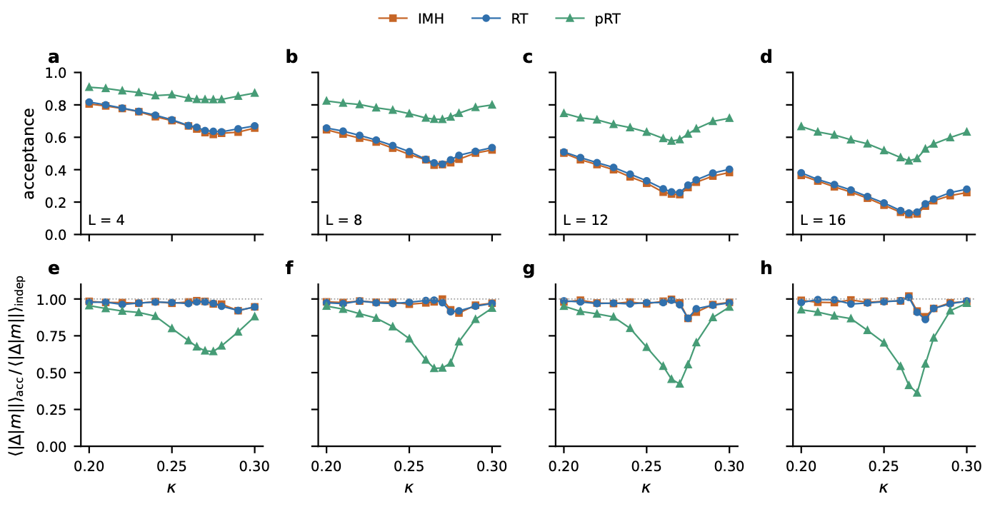
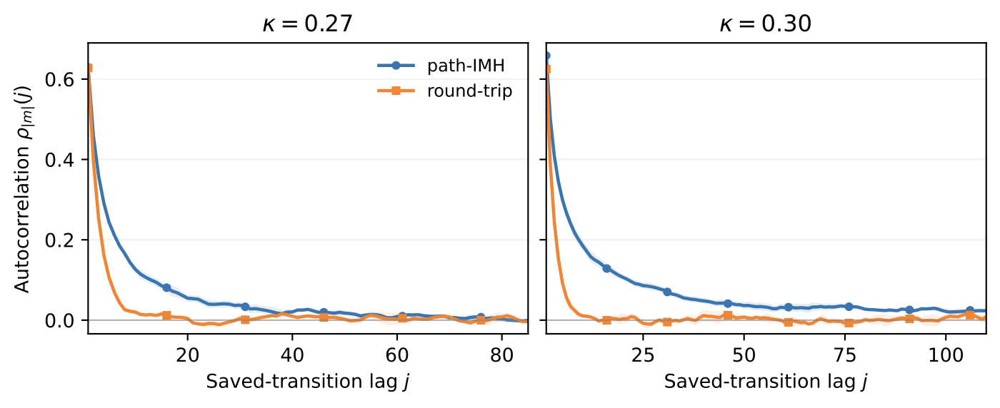

NHMC 预印本NHMC preprint · SPS 博客SPS blog
学习路径上的往返更新：接受率与自相关Metropolis updates on learned round trips: acceptance and autocorrelation
在本文测试的二维 $\phi^4$ 模型中，格点体积增大时，学习路径的重要性权重逐渐集中到少数样本上。 我们沿学习路径回退至中间场，再正向生成新构型，用 Metropolis 接受步骤保持目标分布。 本文比较完整往返、部分往返和独立路径更新的接受率与自相关，检验条件功方差的高斯接受率近似， 并展示固定模型的体积迁移和训练后细化步长的测试。实验结论限于所测模型、观测量和参数范围。
In the 2D $\phi^4$ models tested here, importance weights concentrate on fewer paths as the lattice volume grows. We follow a learned path back to an intermediate field and forward to a new configuration, with a Metropolis step that preserves the target distribution. This post compares acceptance and autocorrelation for full, partial and independent-path updates, tests a Gaussian acceptance approximation based on conditional work variance, and examines frozen-model transfer and post-training step refinement. The empirical conclusions concern the tested models, observables and parameter ranges.
1 三个问题1 Three problems
这项工作涉及三个相互关联的问题：学习型采样器的权重退化、格点场论中的慢模，以及独立 Metropolis 链的长时间停留。
我们以二维 $\phi^4$ 理论为测试对象：$L\times L$ 格点上的实标量场，体积 $V=L^2$。耦合 $\kappa$ 控制场的有序程度。$\kappa$ 小时，场在零附近涨落；$\kappa$ 增大到 $0.265$–$0.27$ 附近时经过临界点；再往上进入破缺相，平均场 $m$ 通常在正值或负值附近涨落。我们关心它的大小 $|m|$ 和符号 $\operatorname{sign}(m)$。作用量和参数见附录。
机器学习：权重退化
扩散模型、流模型和非平衡采样器可以学习连接简单分布与目标分布的路径。对这里考虑的路径构造， 在目标路径受到提议分布覆盖、且路径密度比可计算时，可以得到重要性权重 $w$。 自归一化重加权估计通常有有限样本偏差，在支持集和可积性条件满足时具有一致性。 我们用 $\operatorname{Var}(\log w)$ 和 Kish 有效样本比例（ESS）$(\sum_i w_i)^2/(N\sum_i w_i^2)$ 描述权重的集中程度； Kish ESS 是权重诊断，具体观测量的误差还取决于它与权重的关系。
随着系统增大，权重退化逐渐成为主要困难。Yuanqi Du 在 2026 年 10 月的博客 Pushing Probabilistic Machine Learning Out of Equilibrium 中讨论了大系统中的权重退化。Chatterjee & Diaconis 2018 说明，在其假设下，重要性采样所需样本量与目标分布相对提议分布的 KL 散度有关；这个方向与下文训练损失中的 KL 相反。 图 1 是 $\phi^4$ 上的情形：所测较大格点的每格点 $\operatorname{Var}(\log w)$ 近似重合，支持该范围内总方差近似随体积增长，ESS 随之大幅下降。右图另外两条曲线对应本文的往返更新，其接受率下降得更慢，第 5 节将解释这一差异。
Learned samplers, lattice field theory and MCMC theory each have an old problem. The three look unrelated, but they meet in this work.
Our test bed is 2D $\phi^4$ theory: a real scalar field on an $L\times L$ lattice, volume $V=L^2$. The coupling $\kappa$ controls how ordered the field is. At small $\kappa$ the field fluctuates around zero; near $\kappa\approx0.265$–$0.27$ it passes the critical point; beyond that it enters the broken phase, where the mean field $m$ settles on the positive or the negative side. We follow its size $|m|$ and its sign $\operatorname{sign}(m)$. The action and parameters are in the Appendix.
Machine learning: weight degeneracy
Diffusion models, flows and nonequilibrium samplers can learn paths connecting a simple distribution to the target. For the path constructions considered here, importance weights $w$ are available when the proposal covers the target path support and the density ratio is computable. Self-normalized estimates generally have finite-sample bias and are consistent under the support and integrability conditions. We use $\operatorname{Var}(\log w)$ and the Kish effective sample fraction (ESS) $(\sum_i w_i)^2/(N\sum_i w_i^2)$ to describe weight concentration. Kish ESS is a weight diagnostic; an observable's error also depends on its relation to the weights.
The trouble is large systems. In his October 2026 blog post Pushing Probabilistic Machine Learning Out of Equilibrium, Yuanqi Du discusses weight degeneracy in large systems. Chatterjee & Diaconis 2018 relate the required sample size, under their assumptions, to the KL divergence of the target from the proposal, the reverse direction of the training KL below. In Fig. 1, per-site $\operatorname{Var}(\log w)$ approximately collapses across the larger tested lattices, supporting approximately extensive variance over this range, while ESS falls. The other two lines in the right panel come from the round-trip updates of this post; their acceptance falls much more slowly, for reasons given in Section 5.
每个体积单独训练的 NHMC 模型（$T=16$），13 个耦合。左：每格点的路径对数权重方差 $\operatorname{Var}(\log w)/V$（$L=4$、8、10、12、16）；$L\ge8$ 的曲线近似重合，支持此范围内近似广延的方差，$L=4$ 偏离更明显；峰值在所测临界区域附近。 右：所选 $L$ 上的 Kish ESS 比例与同一模型上完整往返（RT）、部分往返（pRT）的实测接受率（第 3 节）。 ESS 与接受率是不同诊断；第 5 节讨论它们各自的高斯近似。
NHMC models trained separately at each volume ($T=16$), 13 couplings. Left: the per-site variance of the path log weight $\operatorname{Var}(\log w)/V$ ($L=4$, 8, 10, 12, 16); the approximate collapse for $L\ge8$ supports approximately extensive variance over this range, with larger deviations at $L=4$ and a peak near the tested critical region. Right: the Kish ESS fraction and measured acceptance of full (RT) and partial (pRT) round trips on the same models (Section 3). ESS and acceptance are distinct diagnostics; Section 5 discusses their respective Gaussian approximations.
格点场论：临界慢化与拓扑冻结
格点物理学家关心的是另一件事：马尔可夫链要走多少步才能忘掉过去。这由积分自相关时间 $\tau_{\rm int}$ 衡量，单位是算法的一次更新。接近临界点或连续极限时，关联长度 $\xi$ 变大，局部更新和 HMC 的 $\tau_{\rm int}$ 按 $\xi^z$ 增长，这就是临界慢化（Hohenberg & Halperin 1977；Schaefer, Sommer & Virotta 2011）。在规范理论中，拓扑荷几乎停在一个扇区里不动，称为拓扑冻结（Allés 等 1996；Lüscher & Schaefer 2011）。本文的 $\phi^4$ 测试考察磁化的慢模，不能据此判断规范场拓扑冻结是否改善。 在破缺相，局部连续更新在正负磁化之间转换时可能受到界面势垒限制；全局对称变换则可以直接翻转符号。Albergo, Kanwar & Shanahan 2019 在二维 $\phi^4$ 上用流模型做独立 Metropolis，在标准算法出现临界慢化的区域得到了更短的自相关；Kanwar 等 2020 把这一思路推广到 $U(1)$ 规范理论。
MCMC：独立 Metropolis 的停留
使用学习路径最直接的办法，是把它当作独立提议，组成独立 Metropolis 链。MCMC 理论早就指出，权重无界时这种链不是几何遍历的（Mengersen & Tweedie 1996，这里的无界指相对于目标测度的本质无界）。大权重状态可以造成长时间停留（Liu 1996）。 具体学习模型是否满足权重无界这一前提，需要单独分析；本文的有限链记录展示的是实际观察到的停留现象。
接下来的故事围绕这三个问题展开。在此之前，先讲这些采样器背后的物理，以及由此能得到哪几种精确的校正方案。
Lattice field theory: critical slowing down and topological freezing
Lattice physicists care about something else: how many steps a Markov chain needs to forget its past. This is measured by the integrated autocorrelation time $\tau_{\rm int}$, in units of one update of the algorithm. Near a critical point or the continuum limit the correlation length $\xi$ grows, and the $\tau_{\rm int}$ of local updates and HMC grows as $\xi^z$—critical slowing down (Hohenberg & Halperin 1977; Schaefer, Sommer & Virotta 2011). In gauge theories the topological charge almost stops moving between sectors—topological freezing (Allés et al. 1996; Lüscher & Schaefer 2011). Our $\phi^4$ tests concern slow magnetization modes and do not establish an improvement in gauge-field topological freezing. In the broken phase, local continuous updates can encounter an interface barrier between magnetization signs; a global symmetry move can flip the sign directly. Albergo, Kanwar & Shanahan 2019 used independence Metropolis with a flow model in 2D $\phi^4$ and obtained shorter autocorrelation where standard algorithms show critical slowing down; Kanwar et al. 2020 carried the idea to $U(1)$ gauge theory.
MCMC: holding in independence Metropolis
The most direct way to use learned paths is to treat them as independent proposals in an independence Metropolis chain. MCMC theory showed long ago that such a chain is not geometrically ergodic when the weights are unbounded (Mengersen & Tweedie 1996; unbounded here means essentially unbounded under the target measure). Large-weight states can cause long holding times (Liu 1996). Establishing unbounded weights for a particular learned model requires a separate tail analysis; the finite chains here demonstrate observed holding behaviour.
The rest of the story revolves around these three problems. First, though, the physics behind these samplers, and the exact corrections it offers.
2 非平衡采样的物理2 The physics of nonequilibrium sampling
把采样看成一次非平衡过程：从容易采样的分布 $q_0$ 出发，通过一系列随机转移逐步接近目标 $\pi\propto e^{-S}$。若过程变化过快，系统来不及弛豫，终点分布就会偏离 $\pi$。路径功用于量化这一过程的非平衡性质。
记一条完整路径为 $\Gamma$，正向过程给出它的概率 $Q_\theta(\Gamma)$。再设想一个反过来的过程：从目标 $\pi$ 出发，沿配对的反向转移走回起点，它给同一条路径一个未归一化的概率 $\widetilde P_\theta(\Gamma)$。两者之比的对数就是路径功
$$W=\log Q_\theta(\Gamma)-\log\widetilde P_\theta(\Gamma).$$
它满足非平衡统计物理里两条熟悉的关系。Jarzynski 等式（Jarzynski 1997）说 $\mathbb E_Q[e^{-W}]=Z$，$Z$ 是 $\pi$ 的归一化常数；Crooks 关系（Crooks 1999）说目标路径分布与正向路径分布之比正是 $e^{-W}/Z$。所以 $e^{-W}$ 就是把正向样本改写成目标样本所需的权重，也就是上一节的 $w$。平均功与自由能之差，给出了正反路径分布之间的失配：
$$\mathbb E_Q[W]=F+D_{\rm KL}(Q_\theta\Vert P_\theta)\ \ge\ F,\qquad F=-\log Z.$$
对满足上述指数矩关系的高斯功分布，耗散等于 $\operatorname{Var}(W)/2$；非高斯分布还包含高阶累积量的贡献。 图 1 的数据支持所测范围内近似广延的对数权重方差，KL 的广延性仍需要额外条件。 延长演化时间、细化时间离散和重新训练更多段的模型是不同操作，效果应分别检验。第 6 节给出固定参数下的步长测试。
扩散、流和非平衡采样器在这个框架里的区别，只在于每一段转移怎么写。本文用到四种：NHMC（本文）每段先重抽动量再做哈密顿演化；CMCD 与 DBS 走离散化的 Langevin 扩散（下文也称随机微分方程型或 Langevin 型采样器），区别在于反向漂移是否与正向共用一个网络；SPS 也是 Langevin 型过程，时间作为连续变量输入网络。它们的转移公式放在附录。
Think of sampling as a nonequilibrium process: start from an easy distribution $q_0$ and push the system towards the target $\pi\propto e^{-S}$ through a chain of stochastic transitions. If the push is too fast, the system cannot keep up and the endpoint distribution deviates from $\pi$. Thermodynamics keeps the books on this deviation with "work".
Call a complete path $\Gamma$; the forward process gives it probability $Q_\theta(\Gamma)$. Now imagine the process in reverse: start from the target $\pi$ and walk back along paired reverse transitions; it gives the same path an unnormalized probability $\widetilde P_\theta(\Gamma)$. The log of their ratio is the path work
$$W=\log Q_\theta(\Gamma)-\log\widetilde P_\theta(\Gamma).$$
It obeys two familiar relations of nonequilibrium statistical physics. The Jarzynski equality (Jarzynski 1997) says $\mathbb E_Q[e^{-W}]=Z$, the normalization of $\pi$; the Crooks relation (Crooks 1999) says the ratio of the target path distribution to the forward one is exactly $e^{-W}/Z$. So $e^{-W}$ is the weight that turns forward samples into target samples—the $w$ of the previous section. The mean work books the mismatch as dissipation:
$$\mathbb E_Q[W]=F+D_{\rm KL}(Q_\theta\Vert P_\theta)\ \ge\ F,\qquad F=-\log Z.$$
For Gaussian work satisfying the exponential-moment identity above, the dissipation equals $\operatorname{Var}(W)/2$; non-Gaussian work also involves higher cumulants. Fig. 1 supports approximately extensive log-weight variance over the tested range; extensivity of the KL requires additional conditions. Longer evolution time, finer time discretization and retraining a model with more stages are distinct operations whose effects need separate tests. Section 6 reports fixed-parameter step-refinement tests.
Within this framework, diffusion, flow and nonequilibrium samplers differ only in how each stage is written. This post uses four: NHMC (this work) redraws a momentum and then evolves Hamiltonian dynamics in each stage; CMCD and DBS follow a discretized Langevin diffusion (also called SDE-type or Langevin-type samplers below) and differ in whether the reverse drift shares a network with the forward one; SPS is also a Langevin-type process, with time as a continuous network input. Their transition formulas are in the Appendix.
3 三种校正方式3 Three correction methods
路径功给出重加权恒等式，也可用于构造保持目标分布的 Metropolis 更新。这些保证允许提议模型存在误差；有限样本精度还取决于路径重叠和链的混合。
重要性加权。直接按权重求平均：
$$\langle O\rangle_\pi=\frac{\mathbb E_Q[e^{-W}O]}{\mathbb E_Q[e^{-W}]}.$$
这是期望之比的恒等式。实际计算时用两个样本均值相除，得到通常有有限样本偏差的一致估计（Owen，第 9.2 节）。 权重集中到少数样本时，估计可能不稳定，如图 1 的 ESS 所示。
独立路径 Metropolis（path-IMH）。把每条新路径 $\Gamma'$ 当作提议，以 $\min\{1,e^{W(\Gamma)-W(\Gamma')}\}$ 接受，组成路径空间上的马尔可夫链，其平稳分布的终点边缘为 $\pi$。当前状态一直带着它被生成时的功； 进入功特别小、权重特别大的状态后，链可能出现长时间拒绝。
往返更新。本文的做法是不把当前状态的权重带到下一步，而是每一步都为当前构型重新抽一条反向路径。从当前构型 $x$ 出发，沿反向转移退回第 $s$ 段的中间场 $u_s$；再从同一个 $u_s$ 正向走出新构型 $y$。新旧两条记录只在第 $s$ 段之后不同，接受率只比较这一段路的功：
$$\alpha_s=\min\{1,e^{-\Delta}\},\qquad \Delta=W_{\theta,s}(\text{新})-W_{\theta,s}(\text{旧}),\qquad W_{\theta,s}=S(x)+\log f_{\theta,s}(a\mid u_s)-\log r_{\theta,s}(b\mid x).$$
这里 $a$ 是第 $s$ 段之后正向路径用到的随机数（如动量），$b$ 是从 $x$ 退回 $u_s$ 的反向记录，$f_{\theta,s}$ 和 $r_{\theta,s}$ 是这几段正反转移密度的乘积。整个判断只用到作用量和实际的转移概率，不需要 $Z$。 $T$ 是模型的总转移段数，$s$ 是回退位置，重新采样的段数为 $d=T-s$。 $s=0$ 时回到路径起始层，称为完整往返（RT）；$s>0$ 时称为部分往返（pRT）。 这种回退再返回的结构与 Neal 1996 的 tempered transitions 相关。 回退得到的中间场依赖当前构型，并非从先验重新独立抽样。
这些构造要求路径概率配对一致、满足相应的支持集条件，并计入变量变换的雅可比。 重加权的一致性需要可积性条件；马尔可夫链收敛还需要遍历性。下面介绍 NHMC 的具体构造。
Path work gives a reweighting identity and Metropolis updates that preserve the target distribution. These guarantees allow an imperfect proposal; finite-sample accuracy also depends on path overlap and chain mixing.
Importance weighting. Average with the weights:
$$\langle O\rangle_\pi=\frac{\mathbb E_Q[e^{-W}O]}{\mathbb E_Q[e^{-W}]}.$$
This is an identity between expectations. Replacing them with sample averages gives a consistent estimator that generally has finite-sample bias (Owen, Section 9.2). Concentration of weight on a few samples can make the estimate unstable, as indicated by ESS in Fig. 1.
Independent-path Metropolis (path-IMH). Treat each new path $\Gamma'$ as a proposal accepted with $\min\{1,e^{W(\Gamma)-W(\Gamma')}\}$, forming a path-space Markov chain whose stationary endpoint marginal is $\pi$. The current state keeps the work it was generated with; states with particularly small work and large weight can produce long rejection runs.
Round trips. Our approach does not carry the weight of the current state to the next step; instead, it redraws a reverse path for the current configuration at every step. From the current configuration $x$, walk back along reverse transitions to the intermediate field $u_s$ of stage $s$; then walk forward from the same $u_s$ to a new configuration $y$. The old and new records differ only after stage $s$, and the acceptance compares only the work of that part:
$$\alpha_s=\min\{1,e^{-\Delta}\},\qquad \Delta=W_{\theta,s}(\text{new})-W_{\theta,s}(\text{old}),\qquad W_{\theta,s}=S(x)+\log f_{\theta,s}(a\mid u_s)-\log r_{\theta,s}(b\mid x).$$
Here $a$ is the randomness (e.g. momenta) of the forward path after stage $s$, $b$ the reverse record from $x$ back to $u_s$, and $f_{\theta,s}$, $r_{\theta,s}$ the products of the forward and reverse transition densities of these stages. The test uses only the action and the actual transition probabilities, not $Z$. $T$ is the total number of model stages, $s$ is the turning stage, and $d=T-s$ is the number of redrawn stages. Returning to the initial layer ($s=0$) gives a full round trip (RT); $s>0$ gives a partial round trip (pRT). This backward-then-forward structure is related to Neal 1996's tempered transitions. The intermediate field obtained on the reverse path depends on the current configuration; it is not an independent draw from the prior.
These constructions require consistent paired path probabilities, the relevant support conditions and any change-of-variable Jacobians. Reweighting consistency requires integrability, and chain convergence also requires ergodicity. Next we describe the NHMC construction.
4 NHMC 的结构与训练4 NHMC: design and training
我们的采样器 NHMC 把哈密顿蒙特卡洛的结构搬进了学习路径。标准 HMC 给每个场自由度配一个高斯动量，再按哈密顿量 $H=S+\tfrac12p^2$ 做确定性演化。NHMC 把这两步都交给网络：每一段先从依赖当前场的条件高斯里抽动量，再用蛙跳积分器演化，
$$p_t\sim q^F_{\theta,t}(\cdot\mid x_t),\qquad (x_{t+1},\bar p_{t+1})=\Phi_{\theta,t}(x_t,p_t),\qquad t=0,\dots,T-1.$$
演化中的力由目标作用量的解析力、高斯参考分布的力和一个学习的残差组成，组合系数和步长也参与训练。蛙跳的每一小步都是剪切变换，所以 $\Phi_{\theta,t}$ 保持相空间体积、可以精确反演，路径概率里没有雅可比因子。反向过程用另一个条件高斯 $q^R_{\theta,t}$ 描述回退时的动量。$\phi^4$ 有 $\mathbb Z_2$ 对称，我们还允许在演化前随机翻转场的符号。
训练目标就是上一节的平均功。$F$ 与参数无关，所以最小化 $\mathbb E_Q[W]$ 等价于减小正反路径分布之间的 KL；再加上对功涨落的惩罚，得到
$$\mathcal L=\mathbb E_{Q_\theta}[W]+\lambda_{\rm var}\operatorname{Var}_{Q_\theta}(W),\qquad \lambda_{\rm var}\ge0 .$$
连续动量用高斯重参数化，梯度沿各段确定性演化回传。训练中还用往返更新产生的构型维护一个缓冲区，把它们的反向路径也计入训练。在 $\phi^4$ 上，每个 $(L,\kappa)$ 单独训练一个 $T=16$ 段的模型。训练结束后参数全部固定，接下来只关心怎样使用这些路径。
Our sampler NHMC carries the structure of Hamiltonian Monte Carlo into learned paths. Standard HMC gives each field degree of freedom a Gaussian momentum and evolves deterministically under $H=S+\tfrac12p^2$. NHMC hands both steps to networks: each stage draws a momentum from a conditional Gaussian that depends on the current field, then evolves with a leapfrog integrator,
$$p_t\sim q^F_{\theta,t}(\cdot\mid x_t),\qquad (x_{t+1},\bar p_{t+1})=\Phi_{\theta,t}(x_t,p_t),\qquad t=0,\dots,T-1.$$
The force combines the analytic force of the target action, the force of a Gaussian reference and a learned residual; the mixing coefficients and step sizes are trained too. Every leapfrog substep is a shear, so $\Phi_{\theta,t}$ preserves phase-space volume and is exactly invertible, and the path probability has no Jacobian factor. The reverse process uses another conditional Gaussian $q^R_{\theta,t}$ for the momentum on the way back. $\phi^4$ has a $\mathbb Z_2$ symmetry, and we also allow a random sign flip of the field before the evolution.
The training objective is the mean work of Section 2. Since $F$ does not depend on the parameters, minimizing $\mathbb E_Q[W]$ is the same as reducing the KL between forward and reverse path distributions; adding a penalty on the work fluctuations gives
$$\mathcal L=\mathbb E_{Q_\theta}[W]+\lambda_{\rm var}\operatorname{Var}_{Q_\theta}(W),\qquad \lambda_{\rm var}\ge0 .$$
Continuous momenta are reparameterized as Gaussians, so gradients flow back through the deterministic evolution of every stage. During training, configurations produced by round-trip updates fill a buffer whose reverse paths also enter the loss. In $\phi^4$ we train one $T=16$ model for each $(L,\kappa)$. After training all parameters are frozen; from here on we only ask how to use the paths.
5 往返更新的定性图景5 Round trips: the qualitative picture
运行马尔可夫链之前，可以先估计往返更新的接受率。一个关键量是：固定中间场 $u_s$ 时，重新采样的路径片段所对应的功涨落，
$$\sigma^2=\mathbb E_{u_s\sim Q_s}\big[\operatorname{Var}_{f_{\theta,s}}(W_{\theta,s}\mid u_s)\big].$$
$Q_s$ 是正向路径在第 $s$ 段的边缘分布。评估脚本从这些中间场出发生成多条正向后续路径，计算组内方差再平均。 这个量与完整路径的 $\operatorname{Var}_Q(W)$ 不同，后者还包含不同中间场之间的变化。
接受率。在平稳状态和正反提议配对条件下，交换新旧记录给出功差分布的 Crooks 型对称性 $p(\Delta)=e^{\Delta}p(-\Delta)$。 若功差近似高斯，且其方差近似为 $2\sigma^2$，则有高斯预测
$$\alpha\approx\alpha_{\rm G}=\operatorname{erfc}\!\Big(\frac{\sigma}{2}\Big)\ \sim\ \frac{2}{\sigma\sqrt\pi}\,e^{-\sigma^2/4}\quad(\sigma\gg1).$$
从正向条件方差到功差方差的这一步需要检验：平稳往返的中间场分布可能不同于 $Q_s$，不同中间场的条件方差也可能不同。 一般情况下，对接受率取平均不能替换为把平均方差代入 erfc。图 4 检验的是上述近似的数值表现。 这种高斯计算与 HMC 接受率的经典分析相关。 对完整路径，若 $W$ 在提议分布下为高斯，Kish ESS 的大样本极限为 $e^{-\operatorname{Var}_Q(W)}$；它与往返接受率涉及不同的方差和采样分布。
自相关。考虑一个理想基准：每步以与状态无关的概率 $\alpha$ 独立刷新目标样本，否则保持原状态。 此时相关函数为 $(1-\alpha)^j$，积分自相关时间为 $1/\alpha-1/2$。对实测的 $|m|$，我们用经验系数 $C$ 比较这一基准：
$$\tau_{\rm int}(|m|)\approx C\Big(\frac1\alpha-\frac12\Big).$$
$C=1$ 对应这个理想基准；对实际算法，$C$ 可以依赖模型、观测量和参数。 path-IMH 的状态包含携带的路径权重，大权重状态可能有很低的离开概率。RT 每步重新生成反向路径， 其接受率仍可能依赖当前构型。在本文测试中，完整 RT 对 $|m|$ 在相近平均接受率下表现出比 path-IMH 更短的自相关时间。
共享的中间场可以保留旧构型的信息，因此完整 RT 的一次接受不保证产生独立构型。 所测完整 RT 的 $|m|$ 自相关接近上述基准；部分往返的接受率较高，但在所测临界区域附近，每次接受对 $|m|$ 的改变较小（图 3）。
体积。固定模型、$T$ 和回退位置 $s$ 后，可以检验条件功方差是否近似随体积增长，再与接受率数据比较。 这是第 6 节体积迁移图采用的近似。它不指定改变 $T$ 或 $s$ 后方差如何变化。
训练后细化步长。对 CMCD、DBS 和 SPS，可以在固定时间区间内使用更多、更小的时间步。 NHMC 中把一段拆成两段会增加动量抽样次数；增加段内蛙跳子步则只改变该段的数值积分。 这两种操作需要分别检验，第 6 节报告其对路径对数权重方差的影响。
图 2 是浏览器中的演示：$D$ 个独立的双势阱 $S(x)=\sum_i b\,(x_i^2-1)^2$，路径为 $T$ 段线性退火的哈密顿蒙特卡洛，没有神经网络。这里 $D$ 是维数，与往返深度 $d$ 不同。 左右使用同一种路径，展示 path-IMH 和完整 RT 的运行记录；演示中的高斯读数是近似诊断。
A useful pre-chain diagnostic is the work variance of forward continuations at a fixed intermediate field $u_s$,
$$\sigma^2=\mathbb E_{u_s\sim Q_s}\big[\operatorname{Var}_{f_{\theta,s}}(W_{\theta,s}\mid u_s)\big].$$
$Q_s$ is the stage-$s$ marginal of the forward path distribution. The evaluation script draws several forward continuations from each pivot and averages their within-group variances. This differs from the full-path $\operatorname{Var}_Q(W)$, which also includes variation between pivots.
Acceptance. At stationarity, with paired forward and reverse proposals, exchanging old and new records gives the Crooks-type symmetry $p(\Delta)=e^{\Delta}p(-\Delta)$. If the work difference is approximately Gaussian and its variance is approximately $2\sigma^2$, the Gaussian prediction is
$$\alpha\approx\alpha_{\rm G}=\operatorname{erfc}\!\Big(\frac{\sigma}{2}\Big)\ \sim\ \frac{2}{\sigma\sqrt\pi}\,e^{-\sigma^2/4}\quad(\sigma\gg1).$$
Relating forward conditional variance to work-difference variance requires a check: stationary round trips can have a different pivot distribution from $Q_s$, and conditional variances can vary between pivots. Averaging acceptance generally differs from inserting an averaged variance into erfc. Fig. 4 tests this approximation numerically. The Gaussian calculation is related to the classic HMC acceptance analysis. For full paths with Gaussian $W$ under the proposal, the large-sample Kish ESS fraction is $e^{-\operatorname{Var}_Q(W)}$; it involves a different variance and sampling distribution from round-trip acceptance.
Autocorrelation. Consider an ideal benchmark that independently refreshes the target sample with state-independent probability $\alpha$ and otherwise holds its state. Its correlation is $(1-\alpha)^j$, giving integrated autocorrelation time $1/\alpha-1/2$. For measured $|m|$, we compare with this benchmark using an empirical coefficient $C$:
$$\tau_{\rm int}(|m|)\approx C\Big(\frac1\alpha-\frac12\Big).$$
$C=1$ describes that ideal benchmark; for an actual algorithm, $C$ can depend on the model, observable and parameters. A path-IMH state includes its stored path weight, and large-weight states can have very low escape probabilities. RT redraws a reverse path each step, while its acceptance can still depend on the current configuration. In these tests, full RT has shorter autocorrelation for $|m|$ than path-IMH at similar mean acceptance.
The shared pivot can retain information about the old configuration, so an accepted full RT does not guarantee an independent sample. The measured full-RT autocorrelation of $|m|$ is close to the benchmark; partial round trips have higher acceptance but smaller changes of $|m|$ near the tested critical region (Fig. 3).
Volume. At fixed model, $T$ and turning stage $s$, we can test whether conditional work variance grows approximately with volume and compare the resulting prediction with acceptance data. Section 6 uses this approximation for volume transfer. It does not specify how the variance changes with $T$ or $s$.
Refining steps after training. CMCD, DBS and SPS can use more, smaller time steps over a fixed interval. Splitting an NHMC stage adds momentum draws; increasing its internal leapfrog substeps changes the numerical integration within that stage. These operations require separate tests. Section 6 reports their effects on path log-weight variance.
Fig. 2 is a browser demonstration with $D$ independent double wells $S(x)=\sum_i b\,(x_i^2-1)^2$ and $T$ linearly annealed Hamiltonian Monte Carlo stages, with no neural network. Here $D$ is the dimension, distinct from return depth $d$. Both panels use the same path construction and show path-IMH and full-RT records; the Gaussian readout is an approximate diagnostic.
轨迹为每个状态的平均场 $\bar x$（最近 400 步）。统计量：接受率、最长连续拒绝，以及往返的预测接受率 $\operatorname{erfc}(\sqrt{\langle\Delta\rangle}/2)$。这是平稳高斯功差模型下的近似； $\langle\Delta\rangle$ 是运行中的样本均值，有限记录和非平稳初始阶段可能偏离该模型。
Traces show the mean field $\bar x$ of each state (last 400 steps). Statistics: acceptance, longest run of rejections, and the predicted round-trip acceptance $\operatorname{erfc}(\sqrt{\langle\Delta\rangle}/2)$. This approximation assumes a stationary Gaussian work difference; the running sample mean can depart from that model in finite records and during initialization.

各列依次为 $L=4$、8、12、16。上排：path-IMH（橙）、完整往返（蓝）与截断往返（绿，$s=12$）的接受率。下排：被接受的更新使 $|m|$ 平均改变多少，除以两个独立样本之间的平均差；比值为 1（虚线）表示平均变化幅度与两个独立构型之间的差异相当。截断往返的接受率较高，但在临界附近每次更新的变化幅度很小。
Columns are $L=4$, 8, 12, 16. Top: acceptance of path-IMH (orange), full round trips (blue) and truncated round trips (green, $s=12$). Bottom: how much an accepted update changes $|m|$ on average, divided by the mean difference between two independent samples; a ratio of 1 (dashed) means that the mean change matches the difference between two independent configurations. Truncated round trips are accepted more often but move only a little near criticality.
6 结果6 Results
高斯接受率近似
我们在 7 组原生模型（$L=8$、12、16）上用正向路径估计 $\sigma^2$，代入高斯公式，再与长链实测接受率比较。 图 4 的预测没有对接受率重新拟合。数据点接近对角线，但存在偏差；图中未展示预测和实测的不确定性，因此这里不作统计相容性的判断。
Gaussian acceptance approximation
On 7 native models ($L=8$, 12, 16), we estimate $\sigma^2$ from forward paths, insert it into the Gaussian formula and compare with long-chain acceptance. The predictions in Fig. 4 are not fitted to acceptance. The points are near the diagonal, with visible deviations. Uncertainties on the predictions and measurements are not shown, so this plot alone does not establish statistical agreement.
左：高斯近似 $\alpha_{\rm G}(\sigma)$ 曲线与滑块位置；自相关读数采用经验关系和 $C=1.2$，是示意估计。右：7 组原生模型（$L=8$、12、16）的预测与实测接受率，圆为完整往返，方为截断往返（$s=12$），虚线为 $y=x$。悬停查看数值。
Left: the Gaussian approximation $\alpha_{\rm G}(\sigma)$ and slider position; the autocorrelation readout is an illustrative estimate using the empirical relation with $C=1.2$. Right: predicted versus measured acceptance for the 7 native models ($L=8$, 12, 16); circles full round trips, squares truncated round trips ($s=12$), dashed line $y=x$. Hover for values.
体积与迁移
这里固定模型参数和 $T=16$，分别考察 RT（$s=0,d=16$）与 pRT（$s=12,d=4$）的体积迁移。 $T$ 计数动量抽样与确定性演化组成的转移段；每段内部的蛙跳子步数是另一个参数。 不同 $T$ 下重新训练的模型、固定模型改变 $s$ 的测试，以及训练后拆段，是三种不同的实验。
对固定的模型和 $s$，记 $c_s=(\sigma^2/V)_{16}$。 如果迁移后的条件方差近似为 $c_sV$，并沿用第 5 节的高斯近似，便得到接受率预测及目标接受率 $\alpha_*$ 对应的体积：
$$\alpha(V)\approx\alpha_{\rm G}(V)=\operatorname{erfc}\!\Big(\tfrac12\sqrt{c_sV}\Big),\qquad V_{\alpha_*}^{\rm pred}=\frac{4\,[\operatorname{erfc}^{-1}(\alpha_*)]^2}{c_s}.$$
图 5 保留实测点与独立预测之间的偏差。$V_{\alpha_*}^{\rm pred}$ 只表示该近似下的接受率阈值，并非可靠采样的最大体积。 目标分布不变性来自更新核的构造，有限链能否给出可靠估计还需检查热化、自相关和观测量。 例如 $\kappa=0.27$ 时，完整 RT 在 $L=48,64,96$ 的这些记录中没有接受任何提议；这些点不能验证迁移后的采样精度。
Volume and transfer
Here we fix the model parameters and $T=16$, and examine volume transfer for RT ($s=0,d=16$) and pRT ($s=12,d=4$) separately. $T$ counts stages consisting of momentum sampling and deterministic evolution; the number of leapfrog substeps within a stage is a separate parameter. Retraining at different $T$, changing $s$ in a fixed model and splitting stages after training are three distinct experiments.
At fixed model and $s$, define $c_s=(\sigma^2/V)_{16}$. If the transferred conditional variance is approximately $c_sV$ and the Gaussian approximation of Section 5 remains applicable, the acceptance prediction and the volume corresponding to a target acceptance $\alpha_*$ are
$$\alpha(V)\approx\alpha_{\rm G}(V)=\operatorname{erfc}\!\Big(\tfrac12\sqrt{c_sV}\Big),\qquad V_{\alpha_*}^{\rm pred}=\frac{4\,[\operatorname{erfc}^{-1}(\alpha_*)]^2}{c_s}.$$
Fig. 5 retains the deviations between measurements and independent predictions. $V_{\alpha_*}^{\rm pred}$ is an acceptance-threshold estimate within this approximation, not a maximum volume for reliable sampling. Target invariance follows from the kernel construction; finite-chain accuracy also requires equilibration, autocorrelation and observable checks. For example, full RT at $\kappa=0.27$ accepted no proposals in these $L=48,64,96$ records, so those points cannot validate sampling accuracy after transfer.
冻结的 $L=16$ 模型迁移到 $L=16$–$96$ 的实测接受率（点）和高斯体积预测（线）。 曲线系数由图 4 中 $L=16$ 的独立预测记录确定，实线 RT、虚线 pRT；$\kappa=0.20$ 没有这类预测记录，只显示实测点。 竖线为 $V_{\alpha_*}^{\rm pred}$；底部三角表示记录中没有接受事件，不表示真实接受率严格为零。
Measured acceptance of frozen $L=16$ models transferred to $L=16$–$96$ (points) and Gaussian volume predictions (lines). Curve coefficients are determined from the independent $L=16$ prediction records in Fig. 4: solid RT, dashed pRT. At $\kappa=0.20$ those predictions are unavailable, so only measurements are shown. Vertical lines mark $V_{\alpha_*}^{\rm pred}$; bottom triangles indicate no observed acceptance, not a strictly zero underlying rate.
和 HMC 比：自相关随耦合的变化
再看格点场论的问题。图 6 给出各格点尺寸上 $\tau_{\rm int}$ 随耦合的变化。HMC 和 Wolff 团簇算法作为无需训练的参考（设置见附录）。临界附近， HMC 的 $\tau_{\rm int}$ 明显增大，往返更新的自相关时间则较短，$\operatorname{sign}(m)$ 上的差异尤其明显。在破缺相，HMC 的 $\operatorname{sign}(m)$ 在整段记录中没有发生翻转，而往返更新的自相关时间随耦合变化较小。
这些曲线以各算法的一次更新为单位，并非相同计算成本的比较。 NHMC 构造包含随机全局 $\mathbb Z_2$ 符号翻转，因此 $\operatorname{sign}(m)$ 的变化不能全部归因于学到的路径； 机制比较还需要对全局翻转作匹配控制。$|m|$ 的自相关提供另一个诊断。 当前有限格点扫描不足以确定渐近动力学临界指数，也不意味着对关联长度的依赖已经消失。
Against HMC: autocorrelation versus coupling
Next, the lattice problem. Fig. 6 shows $\tau_{\rm int}$ versus coupling at each lattice size. HMC and the Wolff cluster algorithm are references without learning (settings in the Appendix). Near criticality the $\tau_{\rm int}$ of HMC shoots up while round trips stay much lower, most clearly for $\operatorname{sign}(m)$. In the broken phase HMC never flips $\operatorname{sign}(m)$ within the whole record, while the round-trip curves stay flat.
These curves count one update of each algorithm and are not a matched-cost comparison. The NHMC construction includes random global $\mathbb Z_2$ flips, so changes in $\operatorname{sign}(m)$ cannot all be attributed to the learned path; a mechanism comparison also needs matched controls for global flips. The autocorrelation of $|m|$ provides another diagnostic. This finite-lattice scan does not determine an asymptotic dynamic critical exponent or establish independence from the correlation length.
二维 $\phi^4$ 在所选 $L$ 上的 $\tau_{\rm int}$ 随耦合 $\kappa$ 的变化，以一次完整更新为单位（HMC 一条轨迹；Wolff 一遍 Metropolis 扫描加两次单团簇翻转；往返和 IMH 一次 Metropolis 判断）。这些单位不是相同的计算成本。HMC 与 Wolff 为参考算法（空心点、虚线）。$\kappa\approx0.265$–$0.27$ 接近临界，$\kappa\ge0.28$ 为破缺相；HMC 与 Wolff 的 $\operatorname{sign}(m)$ 只在 5 个耦合上做了长记录；若 $\operatorname{sign}(m)$ 在整条记录中从未翻转，以顶部箭头表示。
$\tau_{\rm int}$ of 2D $\phi^4$ at the selected $L$ versus the coupling $\kappa$, in units of one complete update (one HMC trajectory; one Metropolis sweep plus two single-cluster flips for Wolff; one round-trip or IMH Metropolis test). These units do not represent equal computational cost. HMC and Wolff are reference algorithms (open markers, dashed). $\kappa\approx0.265$–$0.27$ is near criticality, $\kappa\ge0.28$ the broken phase; long $\operatorname{sign}(m)$ records of HMC and Wolff exist at 5 couplings; arrows at the top mark runs whose $\operatorname{sign}(m)$ never flipped within the record.
path-IMH 与往返
最后看 MCMC 的更新效率。图 7 将每组 $(L,\kappa)$ 的实测 $\tau_{\rm int}$ 与每次接受都产生独立构型时的基准 $1/\alpha-1/2$ 对照。完整往返的结果接近这一基准，在刚越过临界耦合的位置略高。path-IMH 在临界附近的大格点上则明显偏离基准：两者的平均接受率相近，自相关时间却相差一个数量级。
Path-IMH and round trips
Finally, the MCMC problem. Fig. 7 places the measured $\tau_{\rm int}$ of every $(L,\kappa)$ against the ruler $1/\alpha-1/2$ of "every acceptance is independent". Full round trips follow this ruler almost everywhere, lying slightly above it only just past criticality. Path-IMH lies more than an order of magnitude above on large lattices near criticality: the two have about the same mean acceptance, yet their autocorrelations differ by an order of magnitude.
横轴 $1/\alpha-1/2$ 是以固定概率独立刷新样本的理想基准，纵轴为实测 $\tau_{\rm int}(|m|)$；每个点是一组 $(L,\kappa)$，$L=4$–$16$、13 个耦合。完整往返（RT）落在 $\tau\approx1.2\,(1/\alpha-1/2)$ 上；path-IMH 在接近临界的大体积上远在其上方（$L=16$、$\kappa=0.27$：$\alpha=0.13$，$\tau_{\rm int}=180$），链停在大权重状态上。
The horizontal axis $1/\alpha-1/2$ is the ideal benchmark for independent refreshment with constant probability; the vertical axis is the measured $\tau_{\rm int}(|m|)$; each point is one $(L,\kappa)$, $L=4$–$16$ and 13 couplings. Full round trips (RT) lie on $\tau\approx1.2\,(1/\alpha-1/2)$; path-IMH at large volume near criticality lies far above ($L=16$, $\kappa=0.27$: $\alpha=0.13$, $\tau_{\rm int}=180$): the chain holds on large-weight states.
自相关函数也显示出这一差异。使用同一个模型、平均接受率相近时，往返更新的自相关函数在数步内衰减至接近零，path-IMH 则存在衰减缓慢的长尾（图 8）。随着链长增加，往返更新的自相关时间估计很快趋于稳定；path-IMH 的估计仍持续增大，需要更长的记录才能充分反映链在大权重状态上的长时间停留（图 9）。
The chains themselves show the same. With the same model and similar acceptance, the round-trip autocorrelation function falls to zero within a few steps while path-IMH drags a long tail (Fig. 8). As the chains grow longer, the round-trip autocorrelation estimate settles quickly, whereas the path-IMH estimate keeps rising: its holding on large-weight states needs very long records to be seen in full (Fig. 9).

$L=8$，左 $\kappa=0.27$，右 $\kappa=0.30$（较早一版固定模型）。横轴是包含拒绝在内的更新次数。两者使用同一个模型，平均接受率相近。往返更新的自相关在数步内衰减至接近零，path-IMH 则存在衰减缓慢的长尾。
$L=8$, left $\kappa=0.27$, right $\kappa=0.30$ (an earlier fixed model). The horizontal axis counts updates including rejections. Both use the same model and have similar acceptance; the round-trip autocorrelation falls to zero within a few steps, while path-IMH drags a long tail.

$L=16$，左 $\kappa=0.26$，右 $\kappa=0.27$。上排为 $\langle|m|\rangle$ 的累计估计（阴影为标准误，点线为参考值）；下排为随链长估计的 $\tau_{\rm int}(|m|)$。往返更新（蓝、绿）的自相关时间估计很快趋于稳定；path-IMH（橙）的估计随链长持续增大，说明需要更长的记录才能充分反映链在大权重状态上的停留。灰、粉虚线为 HMC 与 Wolff。
$L=16$, left $\kappa=0.26$, right $\kappa=0.27$. Top: running estimate of $\langle|m|\rangle$ (shaded standard error, dotted reference). Bottom: $\tau_{\rm int}(|m|)$ estimated as the chain grows. Round trips (blue, green) settle quickly; the path-IMH estimate (orange) keeps rising with chain length, showing that holding on large-weight states needs very long records to be seen in full. Grey and pink dashed: HMC and Wolff.
其他学习采样器
在本文使用的 CMCD 和 DBS 离散转移中，可以计算配对的正反路径概率，并采用相同的往返校正（见附录）。 所测完整往返的 $|m|$ 自相关也接近前述经验基准；这里的 IMH 记录出现了长时间停留。 往返构造本身不保证消除所有慢模或长时间拒绝。
三种采样器的路径权重方差随耦合的变化不同（图 10 左）。在对称相和临界附近，采用 80 段路径的 CMCD 与 DBS 方差更小；进入破缺相后，它们的方差迅速增大，而 16 段 NHMC 的方差变化较小，格点越大差异越明显。截断往返的表现也取决于采样器：CMCD 和 DBS 的截断往返几乎总被接受，但临界附近被接受的更新几乎不改变 $|m|$，自相关并不短。
图 10 右图固定总演化时间，把每个训练步细分为更多、更小的时间步。在所测范围内，CMCD 的路径对数权重方差下降，改善逐渐减小； DBS 的响应依赖耦合，在所测破缺相参数点方差增大。一个待验证的解释是：单独训练的 DBS 反向网络可能学到了训练步长特有的修正。 训练步长减半后，DBS 在所测破缺相参数点的细化测试由变差转为改善，这支持步长依赖的存在，但尚不能单独确定原因。 CMCD 的反向漂移受 Nelson 关系约束，也仍需检验有限步长和训练误差。SPS 原文报告的细化收益是另一项观察，不能作为这里的机制证明。
NHMC 的两种操作应分开看。在 $L=8,\kappa=0.27$ 的评估汇总中，固定总积分时间、把每段拆成两段时， $\operatorname{Var}(\log w)$ 从 $1.225$ 增至 $3.755$；保持段数、只把段内蛙跳子步加倍时为 $1.235$。 拆段还增加动量抽样并改变网络的时间输入，因而不是单纯减小积分误差。 在 $L=16,\kappa=0.24$，同样的拆段使方差从 $2.875$ 变为 $3.080$，变化幅度不同。 这些记录限于相应固定模型和操作，不能推出 NHMC 的路径质量只能靠重新训练提高。
分别训练不同段数的模型，是另一组实验。表 1 列出 $L=8,\kappa=0.27$ 已完成的段数扫描。 对这些汇总点做对数直线拟合，整条路径的对数权重方差约按 $T^{-0.8}$ 下降；这只是该参数点、该训练方案和 $T=4$–$32$ 范围内的描述。 它不是条件功方差随 $d,V,T$ 的联合标度，也不是固定模型训练后细化步长的结果。 32 段重新训练的方差为 $0.674$，低于从 16 段模型直接拆段得到的 $3.755$；增加段内蛙跳子步的模型仍是 16 段。
Other learned samplers
The discrete CMCD and DBS transitions used here have computable paired path probabilities and admit the same round-trip correction (see the Appendix). Their measured full-RT autocorrelation of $|m|$ is also close to the empirical benchmark, while these IMH records show long holding times. The round-trip construction itself does not guarantee removal of all slow modes or long rejection runs.
The single-path quality of the three samplers has different strengths (Fig. 10, left). In the symmetric phase and near criticality, CMCD and DBS with 80-stage paths have the smaller variance; in the broken phase their variance climbs quickly while NHMC with 16 stages stays much steadier, and the gap widens with lattice size. Truncated round trips also depend on the sampler: those of CMCD and DBS are almost always accepted, but near criticality the accepted updates barely change $|m|$, so their autocorrelation is not short.
Fig. 10 (right) splits each trained step into smaller steps at fixed total evolution time. Over the tested range, CMCD log-weight variance decreases with diminishing improvement; the DBS response depends on coupling and worsens at the tested broken-phase point. A working hypothesis is that the separately trained DBS reverse network learns corrections specific to its training step size. Halving the training step changes refinement from harmful to helpful at the tested broken-phase point, supporting step-size dependence but not uniquely identifying its cause. CMCD's reverse drift is constrained by the Nelson relation, while finite-step and training errors still require checks. The refinement benefit reported by SPS is a separate observation, not a mechanism test here.
The two NHMC operations need separate interpretation. In the evaluation summary at $L=8,\kappa=0.27$, splitting each stage in two at fixed total integration time changes $\operatorname{Var}(\log w)$ from $1.225$ to $3.755$; keeping the stage count fixed and doubling internal leapfrog substeps gives $1.235$. Stage splitting also adds momentum draws and changes network time inputs, so it is not simply a reduction of integration error. At $L=16,\kappa=0.24$, the same split changes the variance from $2.875$ to $3.080$, a different magnitude of response. These records concern specific frozen models and operations; they do not establish that retraining is the only way to improve NHMC path quality.
Training separate models at different stage counts is another experiment. Table 1 lists the completed scan at $L=8,\kappa=0.27$. A log-linear fit to these summary points gives approximately $T^{-0.8}$ for full-path log-weight variance, describing this parameter point, training recipe and $T=4$–$32$ range. It is neither a joint law for conditional work variance versus $d,V,T$ nor post-training refinement of a fixed model. The separately trained 32-stage model has variance $0.674$, below the $3.755$ obtained by splitting the 16-stage model; doubling internal leapfrog substeps still leaves 16 stages.
左：路径对数权重方差随耦合变化，NHMC $T=16$，CMCD 与 DBS $T=80$，不是等成本比较。 右：CMCD/DBS 在固定总时间下将每步细分为 $m$ 个子步，网络仍按训练时的时间步取值。 黑色圆点是 NHMC 的原模型和每段拆为两段的实测值；黑色空心方块表示段内蛙跳子步加倍，是另一种操作。 黑色虚线和空心圆表示分别训练的 16 与 32 段模型；此处 $m=2$ 表示相对 16 段的段数比，不是同一模型的时间细分。 $L=8$ 的 NHMC 细化记录仅有 $\kappa=0.27$，其他耦合只显示原模型点。右图连接线仅连接已测配置，不表示未测步数的响应；未提供误差条。
Left: log-weight variance versus coupling, with NHMC $T=16$ and CMCD/DBS $T=80$; costs are not matched. Right: CMCD/DBS split each step into $m$ substeps at fixed total time, with networks evaluated at the trained time step. Black circles show measured NHMC baseline and two-way stage splitting; the open black square doubles internal leapfrog substeps, a different operation. The dashed black line and open circle compare separately trained 16- and 32-stage models; here $m=2$ is a stage-count ratio relative to 16, not time refinement of one model. NHMC refinement records at $L=8$ are available only for $\kappa=0.27$; other couplings show the baseline alone. Lines connect measured configurations and do not describe untested step counts; uncertainty bars are unavailable.
| 段数Stages $T$ | 4 | 8 | 16 | 32 |
|---|---|---|---|---|
| $\operatorname{Var}(\log w)$ | 3.51 | 2.14 | 1.22 | 0.67 |
表中是已完成评估的汇总值，未附逐种子误差条。不同段数模型分别训练；表格不构成训练或采样成本匹配的比较。
Completed evaluation summaries; per-seed uncertainty bars are not included. Each stage count uses a separately trained model; training and sampling costs are not matched.
7 回到三个问题7 Back to the three problems
回到开头的三个问题，每个问题都有一个简短的回答。
机器学习。在所测模型中，Kish ESS 已降至千分之几时，RT 仍能接受部分提议，并对 $|m|$ 给出比 path-IMH 更短的每次更新自相关时间。 条件功方差提供可检验的接受率近似。实际计算效率还需要比较达到同一观测量误差所需的时间，并说明训练成本的处理方式。
格点场论。本文的二维 $\phi^4$ 测试展示了指定观测量的自相关改善，以及固定模型迁移后接受率的下降。 全局符号翻转、路径更新与计算成本需要分别比较，临界指数和规范场拓扑慢模需要专门的测试。
MCMC。采样效率取决于更新能否有效改变慢模，以及为此付出的计算成本。 Wolff 团簇算法展示了集体更新的重要性。对于学习到的非平衡路径，RT/pRT 提供了构造保持目标分布的 Metropolis 更新的方法。在本文测试的二维 $\phi^4$ 系统中，完整往返更新在相近平均接受率下，比 path-IMH 更快去相关；部分往返则需要权衡接受率、每次更新的移动幅度和计算成本。
下一步。分别扫描模型段数、回退位置和段内积分精度，并核对各自的方差、观测量误差与计算时间。 这些比较才能说明，在给定格点和预算下应怎样选择训练和更新方式。
相关工作：Neal 1996（tempered transitions）；Gupta, Kilcup & Sharpe 1988（HMC 接受率）；Jarzynski 1997、Crooks 1999（非平衡功关系）；Mengersen & Tweedie 1996、Liu 1996（IMH）；Hohenberg & Halperin 1977、Schaefer, Sommer & Virotta 2011（临界慢化）；Allés 等 1996、Lüscher & Schaefer 2011（拓扑冻结）；Albergo, Kanwar & Shanahan 2019、Kanwar 等 2020（格点场论中的流模型采样）；Chatterjee & Diaconis 2018（重要性采样的样本量）；Nilmeier 等 2011（NCMC）；Caselle, Cellini, Nada, Panero 2022 与 Bulgarelli, Cellini, Nada 2025（非平衡 MCMC 与 SNF 的体积标度）；Del Debbio 等 2021、Abbott 等 2023（流模型的可扩展性）；Vargas 等 2024（CMCD）；Richter & Berner 2024（DBS）；Blessing 等 2025（UDB）；arXiv:2606.13790（SPS）；Y. Du，Pushing Probabilistic Machine Learning Out of Equilibrium（2026 博客）。
Back to the three problems from the start; each has a short answer.
Machine learning. In the tested models, RT accepts some proposals even when Kish ESS is a few per mille, and gives shorter per-update autocorrelation of $|m|$ than path-IMH. Conditional work variance supplies a testable acceptance approximation. Computational efficiency also requires comparing the time to reach a given observable error and stating how training cost is counted.
Lattice field theory. The 2D $\phi^4$ tests show improved autocorrelation for the specified observables and declining acceptance after frozen-model transfer. Global sign flips, path updates and computational cost need separate comparisons; critical exponents and gauge-field topological slow modes require dedicated tests.
MCMC. Sampling efficiency depends on how effectively an update changes the slow modes and on its computational cost. The Wolff cluster algorithm illustrates the importance of collective updates. For learned nonequilibrium paths, RT/pRT provide a way to construct Metropolis updates that preserve the target distribution. In the 2D $\phi^4$ systems tested here, full round trips decorrelate faster than path-IMH at similar mean acceptance rates; partial round trips require balancing acceptance, the size of each move, and computational cost.
Next steps. Scan model stage count, turning stage and within-stage integration accuracy separately, checking variance, observable error and computational time for each. Those comparisons can guide the choice of training and updates for a given lattice and budget.
Related work: Neal 1996 (tempered transitions); Gupta, Kilcup & Sharpe 1988 (HMC acceptance); Jarzynski 1997, Crooks 1999 (nonequilibrium work relations); Mengersen & Tweedie 1996, Liu 1996 (IMH); Hohenberg & Halperin 1977, Schaefer, Sommer & Virotta 2011 (critical slowing down); Allés et al. 1996, Lüscher & Schaefer 2011 (topological freezing); Albergo, Kanwar & Shanahan 2019, Kanwar et al. 2020 (flow sampling in lattice field theory); Chatterjee & Diaconis 2018 (sample size of importance sampling); Nilmeier et al. 2011 (NCMC); Caselle, Cellini, Nada, Panero 2022 and Bulgarelli, Cellini, Nada 2025 (volume scaling of NE-MCMC and SNF); Del Debbio et al. 2021, Abbott et al. 2023 (scalability of flows); Vargas et al. 2024 (CMCD); Richter & Berner 2024 (DBS); Blessing et al. 2025 (UDB); arXiv:2606.13790 (SPS); Y. Du, Pushing Probabilistic Machine Learning Out of Equilibrium (blog, 2026).
附录 模型与采样器Appendix Model and samplers
模型与参考算法
二维 $\phi^4$ 的作用量为
$$S(\phi)=\sum_x\Big[-2\kappa\sum_{\mu}\phi_x\phi_{x+\hat\mu}+(1-2\lambda)\phi_x^2+\lambda\phi_x^4\Big],\qquad \lambda=0.022,$$
周期边界，$\kappa$ 取 $0.20$–$0.30$ 共 13 个值。HMC 参考链用步长 $0.1$、每条轨迹 10 步蛙跳；Wolff 参考链的一次更新是一遍 Metropolis 扫描加两次单团簇翻转。两者各记录 $10^6$ 次更新，$\operatorname{sign}(m)$ 的长记录在 5 个耦合上各 $2\times10^5$ 次。积分自相关时间 $\tau_{\rm int}=\tfrac12+\sum_{j\ge1}\rho(j)$，$\rho(j)$ 是相隔 $j$ 次更新的归一化自相关。
四种采样器的转移
四种采样器的路径功都可以写成同一种形式：
$$W=\log q_0(x_0)+S(x_T)+\sum_t\big[\log(\text{第 }t\text{ 段正向转移密度})-\log(\text{配对的反向转移密度})\big].$$
NHMC（本文）的正向转移是第 4 节的动量重抽加蛙跳，反向转移是回退时的动量密度 $q^R_{\theta,t}(-\bar p_{t+1}\mid x_{t+1})$，所以每段贡献 $\log q^F_{\theta,t}(p_t\mid x_t)-\log q^R_{\theta,t}(-\bar p_{t+1}\mid x_{t+1})$。蛙跳保体积，不出现雅可比因子。
CMCD（Vargas 等 2024）是受控的过阻尼 Langevin 扩散，按 Euler–Maruyama 离散。插值分布为 $\log\pi_{t_k}=b_k\log\gamma+(1-b_k)\log q_0$（$\gamma=e^{-S}$，系数 $b_k$ 可学），正向与反向转移为
$$\begin{aligned}F_k&=\mathcal N\big(x_k+\eta_k[\nabla\log\pi_{t_k}(x_k)+f_\theta(x_k,t_k)],\,2\eta_k\big),\\ B_k&=\mathcal N\big(x_{k+1}+\eta_k[\nabla\log\pi_{t_{k+1}}(x_{k+1})-f_\theta(x_{k+1},t_{k+1})],\,2\eta_k\big).\end{aligned}$$
反向漂移中的控制项为 $-f_\theta$（Nelson 关系），正反向由同一个网络配对。我们将 UDB 基准的官方训练方案（Blessing 等 2025）移植到 PyTorch，取 $T=80$；步长 $\eta_k$ 以 $0.1$ 为基准，采用余弦调度并参与训练，高斯先验的宽度也参与训练。
DBS（Richter & Berner 2024）这里用的是 UDB 基准中带退火漂移的 DBS 配置：与 CMCD 用同样的 $F_k$ 与 $B_k$，只是反向漂移中的 $-f_\theta$ 换成单独训练的网络 $g_\phi$，正反向不要求配对。训练方案同上，$T=80$。
SPS（arXiv:2606.13790）也是离散化的 Langevin 过程，从高斯先验出发，漂移中没有插值分布的梯度。正向和反向漂移各用一个网络（$K_{\theta,F}$、$K_{\theta,B}$），扩散系数 $\sigma_\theta(t)$ 由第三个小网络给出，时间作为连续变量输入网络。正向与反向一步为（原文式 2.2、2.7）
$$\begin{aligned}s_{i+1}&=s_i+\sigma_\theta^2(t_i)\,K_{\theta,F}(s_i,t_i)\,\Delta t+\sigma_\theta(t_i)\sqrt{\Delta t}\,\xi_i,\\ s_i&=s_{i+1}+\sigma_\theta^2(t_i)\,K_{\theta,B}(s_{i+1},t_i)\,\Delta t+\sigma_\theta(t_i)\sqrt{\Delta t}\,\eta_{i+1},\end{aligned}\qquad \Delta t=1/N .$$
它的公开代码以 $N=250$ 步训练、以 $N=2500$ 步采样，不重新训练。本文没有运行 SPS，上式取自原文。
正文中 CMCD 与 DBS 的结果都在同一套往返框架下得到，不是它们原文的采样方式。
Model and reference algorithms
The action of 2D $\phi^4$ is
$$S(\phi)=\sum_x\Big[-2\kappa\sum_{\mu}\phi_x\phi_{x+\hat\mu}+(1-2\lambda)\phi_x^2+\lambda\phi_x^4\Big],\qquad \lambda=0.022,$$
with periodic boundaries and 13 values of $\kappa$ from $0.20$ to $0.30$. The HMC reference chains use step size $0.1$ and 10 leapfrog steps per trajectory; one update of the Wolff reference chains is one Metropolis sweep plus two single-cluster flips. Each records $10^6$ updates; the long $\operatorname{sign}(m)$ records have $2\times10^5$ updates at 5 couplings. The integrated autocorrelation time is $\tau_{\rm int}=\tfrac12+\sum_{j\ge1}\rho(j)$, with $\rho(j)$ the normalized autocorrelation at lag $j$.
Transitions of the four samplers
The path work of all four samplers has the same form:
$$W=\log q_0(x_0)+S(x_T)+\sum_t\big[\log(\text{forward density of stage }t)-\log(\text{paired reverse density})\big].$$
NHMC (this work): the forward transition is the momentum draw plus leapfrog of Section 4; the reverse transition is the density of the momentum on the way back, $q^R_{\theta,t}(-\bar p_{t+1}\mid x_{t+1})$, so each stage contributes $\log q^F_{\theta,t}(p_t\mid x_t)-\log q^R_{\theta,t}(-\bar p_{t+1}\mid x_{t+1})$. The leapfrog preserves volume, so no Jacobian appears.
CMCD (Vargas et al. 2024) is a controlled overdamped Langevin diffusion, Euler–Maruyama discretized. With the interpolation $\log\pi_{t_k}=b_k\log\gamma+(1-b_k)\log q_0$ ($\gamma=e^{-S}$, learned coefficients $b_k$), the forward and reverse transitions are
$$\begin{aligned}F_k&=\mathcal N\big(x_k+\eta_k[\nabla\log\pi_{t_k}(x_k)+f_\theta(x_k,t_k)],\,2\eta_k\big),\\ B_k&=\mathcal N\big(x_{k+1}+\eta_k[\nabla\log\pi_{t_{k+1}}(x_{k+1})-f_\theta(x_{k+1},t_{k+1})],\,2\eta_k\big).\end{aligned}$$
The control term of the reverse drift is the negative of the forward one, $-f_\theta$ (Nelson relation), so one network pairs forward and reverse. We train it with the official recipe of the UDB benchmark (Blessing et al. 2025) ported to PyTorch, $T=80$; the step size $\eta_k$ has base value $0.1$ with a cosine schedule and is learned, as is the width of the Gaussian prior.
DBS (Richter & Berner 2024) is used here in the UDB benchmark configuration with annealing drift: the same $F_k$ and $B_k$ as CMCD, except that $-f_\theta$ in the reverse drift is replaced by a separately trained network $g_\phi$, with no pairing. Same training recipe, $T=80$.
SPS (arXiv:2606.13790) is also a discretized Langevin process, starting from a Gaussian prior with no interpolating-distribution gradient in the drift. Forward and reverse drifts each have their own network ($K_{\theta,F}$, $K_{\theta,B}$), a third small network gives the diffusion coefficient $\sigma_\theta(t)$, and time enters as a continuous variable. One forward and one reverse step are (Eqs. 2.2 and 2.7 of the paper)
$$\begin{aligned}s_{i+1}&=s_i+\sigma_\theta^2(t_i)\,K_{\theta,F}(s_i,t_i)\,\Delta t+\sigma_\theta(t_i)\sqrt{\Delta t}\,\xi_i,\\ s_i&=s_{i+1}+\sigma_\theta^2(t_i)\,K_{\theta,B}(s_{i+1},t_i)\,\Delta t+\sigma_\theta(t_i)\sqrt{\Delta t}\,\eta_{i+1},\end{aligned}\qquad \Delta t=1/N .$$
Its public code trains with $N=250$ steps and samples with $N=2500$ without retraining. We did not run SPS; the updates above are taken from the paper.
All CMCD and DBS results in the main text were obtained in the same round-trip framework, not with the sampling procedures of their original papers.
每一行是一段正向转移（黑色箭头）和配对的反向转移（橙色虚线）。NHMC 每段完整重抽动量，再做确定性的哈密顿演化。CMCD 与 DBS（按 UDB 基准中带退火漂移的配置）的漂移里含插值分布的梯度 $\nabla\log\pi_t$，区别在于反向控制项是正向的 $-f_\theta$ 还是单独的网络 $g_\phi$。SPS 的正反漂移都由各自的网络学出，没有退火项，扩散系数 $\sigma_\theta(t)$ 也可学，时间是连续输入，因此生成时可以改用不同的步数（原文训练 $N=250$、生成 $N=2500$）。公式见上文。
Each row is one forward transition (black arrows) and its paired reverse transition (orange dashed). NHMC fully redraws the momentum in each stage and then evolves deterministic Hamiltonian dynamics. CMCD and DBS (the UDB benchmark configuration with annealing drift) include the gradient $\nabla\log\pi_t$ of an interpolating distribution in the drift and differ in whether the reverse control is the forward $-f_\theta$ or a separate network $g_\phi$. In SPS both drifts are learned by their own networks with no annealing term, the diffusion coefficient $\sigma_\theta(t)$ is learned too, and time is a continuous input, so generation can use a different number of steps (the paper trains with $N=250$ and generates with $N=2500$). Formulas above.